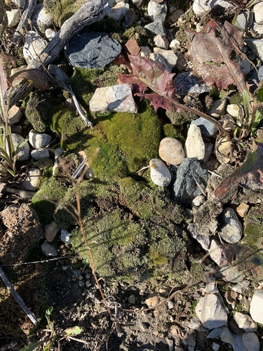

Andreaeobryaceae
Andreaeobryum Moss Family
Andreaeobryaceae is another monotypic family representing an early diverging moss lineage, placed in its own class, Andreaeobryopsida. It contains a single species, Andreaeobryum macrosporum, which is endemic to a small region of northwestern North America (Alaska and adjacent Yukon). This rare moss is notable for growing exclusively on calcareous rock (limestone/dolomite), possessing a true seta (unlike its relatives Andreaeaceae and Sphagnaceae), and having a unique capsule that dehisces via valves splitting from the apex downwards.
Overview
The family Andreaeobryaceae, with its sole member Andreaeobryum macrosporum, is a significant group for understanding moss evolution despite its extreme rarity and restricted range. Discovered in the 1970s, it shares a superficial resemblance to Andreaea, forming dark brownish or blackish, brittle tufts on rock surfaces.
However, its strict preference for calcareous substrates (limestone or dolomite) immediately distinguishes it ecologically from the acid-rock dwelling Andreaeaceae. Morphologically, the presence of a true seta supporting the capsule and the unique method of capsule opening (valvate dehiscence from the apex) are key distinguishing features.
Found in arctic-alpine environments of Alaska and the Yukon Territory, Andreaeobryum faces harsh conditions. Its evolutionary position as the sister group to Andreaeopsida provides crucial data points for reconstructing the early history and diversification of mosses. Like other rare, specialized bryophytes, it has no direct economic importance but holds immense scientific value.
Quick Facts
- Scientific Name: Andreaeobryaceae
- Common Name: Andreaeobryum Moss Family (no standard common name)
- Number of Genera: 1 (Andreaeobryum)
- Number of Species: 1 (Andreaeobryum macrosporum)
- Distribution: Endemic to northwestern North America (Alaska, Yukon Territory).
- Evolutionary Group: Bryophytes - Mosses (Class: Andreaeobryopsida)
Key Characteristics
Growth Form and Habit
Andreaeobryum is an acrocarpous moss, forming dense, dark (brownish to blackish), brittle tufts or cushions, typically on calcareous rock surfaces.
Stems
Stems are erect and branched, similar in general appearance to Andreaea.
Leaves
Leaves are small, crowded, ovate-lanceolate, and typically possess a costa (midrib). Leaf cells are thick-walled. The overall leaf morphology is quite similar to many species of Andreaea.
Sporophytes (Reproductive Structures)
Sporophytes are terminal (acrocarpous). Crucially, the capsule is elevated on a true seta (a stalk derived from sporophyte tissue), which is relatively thick and stout. This contrasts with the pseudopodium found in Andreaeaceae and Sphagnaceae. The capsule is unique: it lacks a peristome but dehisces via valvate splitting. It splits along 4-8 vertical lines starting from the apex downwards, with the valves remaining attached at the base. An operculum (lid) is differentiated but may be rudimentary or fused to the capsule apex. The columella (central sterile tissue) persists within the opened capsule.
Spores and Dispersal
Spores are relatively large (hence 'macrosporum') and are released as the valves of the capsule separate upon drying. Wind is the likely primary dispersal agent.
Habitat
Andreaeobryaceae has a highly specific habitat requirement: it grows exclusively on exposed calcareous rock surfaces (limestone, dolomite) in arctic and alpine regions of northwestern North America. This preference for basic rock starkly contrasts with the acidic rock preference of Andreaeaceae.
Field Identification
Identifying Andreaeobryaceae requires attention to its very specific geographic range, habitat substrate, and unique sporophyte characteristics.
Primary Identification Features
- Location and Habitat: Restricted to NW North America (Alaska/Yukon), growing exclusively on calcareous rock (limestone/dolomite) in alpine/arctic settings.
- Growth Habit: Dark, brittle, acrocarpous tufts, resembling Andreaea.
- Capsule Dehiscence (Key Feature): Mature capsules split via valves from the apex downwards (4-8 valves).
- Seta Presence: Capsule is borne on a relatively thick, true seta (distinguishing it from Andreaeaceae's pseudopodium).
Secondary Identification Features
- Texture: Plants feel brittle when dry.
- Leaf Shape/Costa: Leaves small, crowded, typically costate (requires hand lens).
Seasonal Identification Tips
- Year-round: The dark gametophytes are visible year-round on calcareous rocks within its range.
- Sporophyte Timing: Mature capsules displaying the characteristic valvate dehiscence are needed for confirmation. Timing is likely linked to the short arctic/alpine growing season, potentially visible in mid-to-late summer.
Common Confusion Points
Andreaeobryaceae can be confused with:
- Andreaeaceae (Andreaea): Similar dark, brittle tufts but grows on acidic rock, has a pseudopodium (not a seta), and capsule slits that do not typically reach the apex.
- Grimmiaceae (e.g., Grimmia, Schistidium): Some species grow on calcareous rock and have setae. Distinguished by having a distinct operculum and usually a peristome (even if small), lacking the valvate dehiscence of Andreaeobryum.
Field Guide Quick Reference
Look For:
- Location: NW North America ONLY
- Habitat: Calcareous rock (alpine/arctic)
- Dark, brittle, acrocarpous tufts
- Capsule on true seta
- Capsule splits via valves from apex down
- No peristome
Key Variations:
- Only one species, limited variation
- Number of capsule valves (4-8)
- Leaves typically costate
Notable Examples
The Andreaeobryaceae family contains only one known species:

Andreaeobryum macrosporum
(No standard common name)
The sole representative of the family and class. This rare moss is endemic to calcareous rocks in arctic-alpine regions of Alaska and the Yukon. It is distinguished by its true seta and unique capsule that splits into valves from the apex downwards. Its large spores give it the specific epithet 'macrosporum'.
Phylogeny and Classification
Andreaeobryaceae represents another critical early branch in moss evolution, classified in its own class, Andreaeobryopsida. Phylogenetic analyses consistently place Andreaeobryopsida as the sister group to Andreaeopsida (the class containing Andreaeaceae). These two classes together form a lineage that diverged very early from all other mosses, except for the Takakiopsida.
The existence of this family highlights the diversity of reproductive strategies experimented with early in moss evolution. The combination of a true seta (like most derived mosses) with a unique valvate dehiscence mechanism (unlike either Andreaeaceae or most other mosses) makes Andreaeobryaceae particularly informative for understanding character evolution in bryophytes.
Position in Plant Phylogeny
- Kingdom: Plantae
- Division: Bryophyta (Mosses)
- Class: Andreaeobryopsida
- Order: Andreaeobryales
- Family: Andreaeobryaceae
Evolutionary Significance
Andreaeobryaceae provides key insights into moss evolution:
- Sister Group to Andreaeopsida: Helps resolve relationships among the earliest moss lineages.
- Mosaic of Characters: Possesses a mix of seemingly ancestral (basal position) and derived (true seta) traits.
- Unique Dehiscence Mechanism: The valvate capsule represents another evolutionary experiment in spore dispersal among early mosses.
- Habitat Specialization: Its strict preference for calcareous rock contrasts sharply with its closest relative, highlighting early ecological divergence.
- Biogeographic Interest: Its restricted distribution in a formerly glaciated region raises questions about its survival and dispersal history.